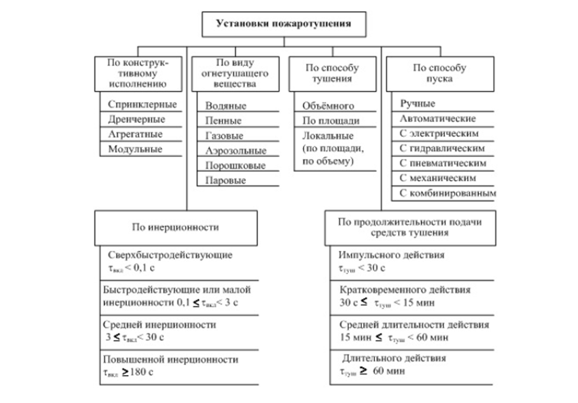
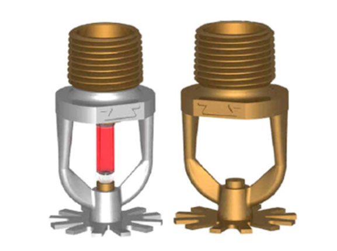
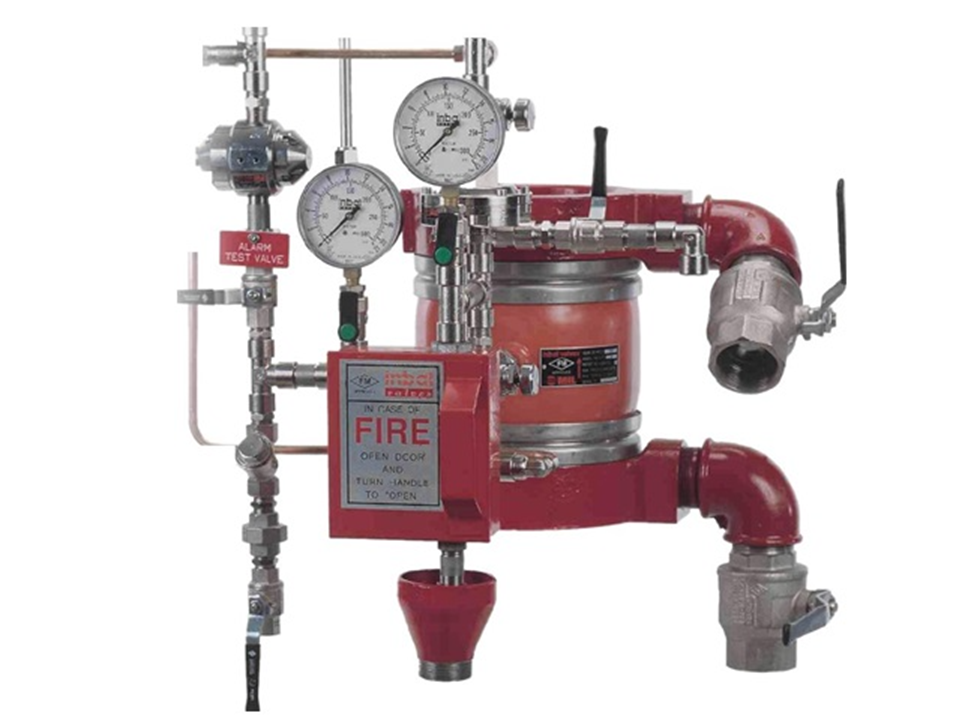
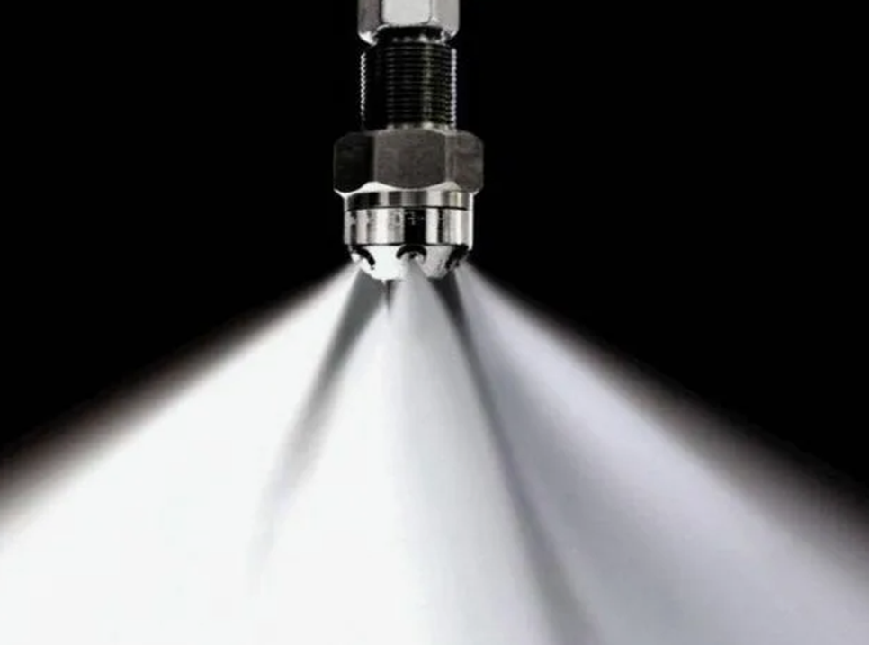
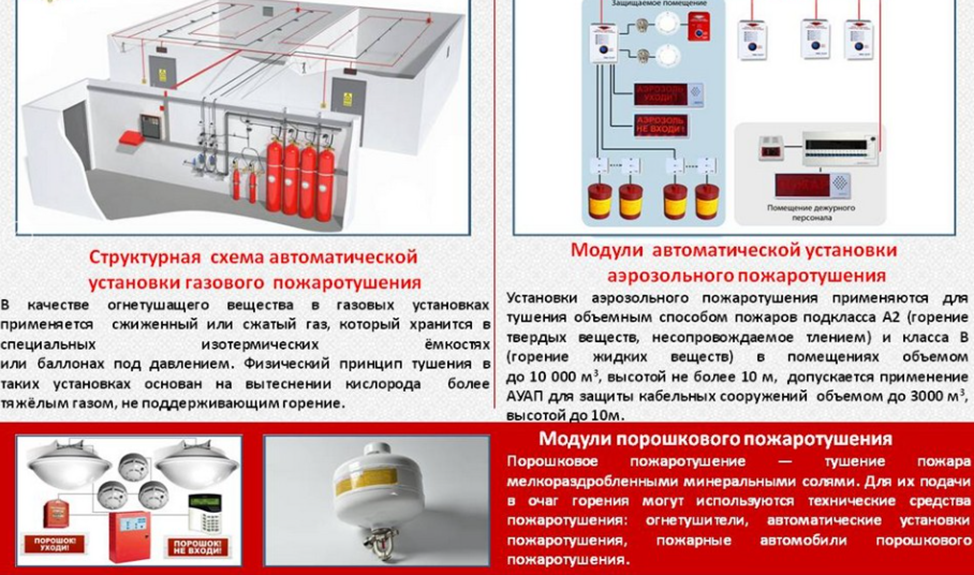

Автоматические установки пожаротушения

В ходе данного занятия вы познакомитесь с понятием установок пожаротушения, их видами и основными элементами системы. Мы постараемся изложить материал в доступной форме, без сложных технических терминов, чтобы вы смогли получить базовые знания в области обеспечения пожарной безопасности и уверенно применять их в своей профессиональной деятельности.
Автоматические установки пожаротушения (АУП) предназначены для тушения или локализации пожара. Для противопожарной защиты применяют различные стационарные установки. Эти установки можно классифицировать по их назначению, виду огнетушащего вещества, режиму работы, степени автоматизации, конструктивному исполнению, принципу действия и инерционности.

Системы пожаротушения — это один из технических элементов системы противопожарной защиты, который используется там, где пожар может быстро распространиться на ранней стадии.
Автоматические системы пожаротушения (АУП) — это системы, которые активируются автоматически, когда контролируемые параметры пожара (например, температура или дым) достигают установленных пороговых значений в защищаемой зоне.
Система пожаротушения представляет собой комплекс стационарных технических устройств, которые используются для тушения пожара путём выпуска огнетушащих веществ.
По способу активации системы пожаротушения делятся на ручные (активируются вручную) и автоматические. По типу огнетушащего вещества они могут быть водяными, пенными, газовыми, аэрозольными, порошковыми, паровыми или комбинированными.
Модульные системы пожаротушения представляют собой совокупность одного или нескольких модулей, которые могут автономно выполнять задачу по тушению пожара. Эти модули размещаются в помещении, которое требуется защитить, или рядом с ним. Все модули объединены в единую систему, которая обнаруживает пожар и запускает процесс тушения.
Автоматические установки водяного пожаротушения
Системы водяного пожаротушения применяются в различных сферах деятельности и предназначены для защиты объектов, где используются такие материалы, как хлопок, древесина, ткани, пластмассы, лён, резина, горючие и сыпучие вещества, а также ряд огнеопасных жидкостей.
Эти системы также используются для защиты технологического оборудования, кабельных сооружений и объектов культуры.
В зависимости от конструкции, системы водяного пожаротушения можно разделить на два типа: спринклерные и дренчерные.
Основное отличие между этими системами заключается в типе оросителя и наличии клапана в узле управления. Кроме того, спринклерные системы имеют самостоятельную побудительную систему, которая позволяет дистанционно и локально включать систему.
Оросители, как спринклерные, так и дренчерные, предназначены для распыления воды и распределения её по защищаемой площади при тушении пожаров или их локализации. Также они могут использоваться для создания водяных завес.
Спринклерные оросители — это автоматически действующие устройства, которые применяются для разбрызгивания воды над защищаемой поверхностью в спринклерных установках и в качестве побудителя в дренчерных установках пожаротушения.

В зависимости от наличия теплового замка, оросители можно разделить на две группы: спринклерные (С) и дренчерные (Д). Также оросители различаются по типу используемого огнетушащего вещества: водяные (В) и пенные (П).
По способу монтажа оросители можно разделить на следующие типы:
вертикальные, розетка вверх (В);вертикальные, розетка вниз (Н);универсальные, розетка вверх или вниз (У);горизонтальные, относительно оси оросителя (Г).
По типу покрытия корпуса оросители можно разделить на три группы: без покрытия (о), с декоративным покрытием (д) и с антикоррозионным покрытием (а).
По типу теплового замка оросители можно разделить на три типа: с плавким элементом (П), с разрывным элементом (Р) и с упругим элементом (У).
В установках водяного и пенного пожаротушения есть специальный элемент — узел управления. Он состоит из нескольких частей: контрольно-сигнального клапана; запорной арматуры; контрольно-измерительных приборов; системы трубопроводов.
Узел управления отвечает за пропуск огнетушащего вещества в питающий трубопровод, формирование команд на пуск других устройств и выдачу сигнала оповещения о пожаре.
Технические характеристики клапанов, используемых в узлах управления, должны обеспечивать требуемый расход и возможность работы с различными видами сигнализации в соответствии с требованиями Свода правил.
На рисунке представлен узел управления Inbal.

У традиционных систем водяного пожаротушения есть один минус — они подают воду с большим напором, что не всегда эффективно для тушения пожара. Кроме того, вода может повредить материалы, ценности и оборудование.
Установки пожаротушения тонкораспыленной водой

Один из методов повышения эффективности пожаротушения с использованием воды — это применение тонкораспылённой воды. Тонкораспылённая вода — это вода, которая получается путём дробления водяной струи на мелкие капли, размер которых составляет до 100 микрометров.
Автоматические системы пожаротушения с использованием тонкораспылённой воды могут быть как стационарными, так и модульными. Они используются для поверхностного и локального тушения пожаров классов А и В.
В последние годы стали активно применяться системы пожаротушения с использованием тонкораспылённой воды, диаметр капель которой составляет не менее 100 микрометров. Такие системы наиболее эффективны для тушения возгораний водонерастворимых нефтепродуктов с температурой кипения ниже 100 градусов Цельсия. Системы пожаротушения с использованием тонкораспылённой воды могут применяться для тушения пожаров на всей расчетной площади помещения, если его негерметичность не превышает 3%. В некоторых случаях тонкораспылённая вода с размером капель от 50 до 70 микрометров может использоваться для объёмного пожаротушения.
Автоматические установки пенного пожаротушения
В таких отраслях промышленности, как нефтедобывающая, химическая, нефтехимическая, нефтеперерабатывающая, металлургическая и энергетическая, широко применяются установки пенного пожаротушения.
Эти установки отличаются от систем водяного пожаротушения наличием специальных устройств для получения пены (оросителей и пеногенераторов), а также наличием пенообразователя и системы его дозирования. Остальные элементы и узлы в этих установках аналогичны тем, что используются в системах водяного пожаротушения.
Выбор дозирующего устройства в установках пенного пожаротушения зависит от особенностей защищаемого объекта, системы водоснабжения и типа установки (спринклерная или дренчерная).
В настоящее время системы дозирования пенообразователя проектируются по двум основным схемам: с заранее приготовленным раствором пенообразователя и с дозированием пенообразователя в поток воды с помощью насоса-дозатора с дозирующей шайбой или с помощью эжектора-смесителя.
Автоматические установки газового пожаротушения (АУГП)

В зависимости от способа тушения, автоматические установки газового пожаротушения (АУГПТ) могут быть объёмными или локальными. При объёмном пожаротушении огнетушащее вещество равномерно распределяется по всему помещению, создавая необходимую концентрацию для тушения пожара. Локальное пожаротушение, в свою очередь, предполагает концентрацию огнетушащего вещества в определённой зоне помещения, что позволяет эффективно тушить пожары отдельных агрегатов и оборудования.
Установки локального тушения устроены аналогично объёмным, но их распределительные трубопроводы прокладываются не по всему помещению, а непосредственно над пожароопасным оборудованием. По способу запуска АУГПТ могут быть с электрическим или пневматическим пуском.
По способу хранения газового огнетушащего состава (ГОС) АУГПТ делятся на централизованные и модульные.
Централизованные АУГПТ содержат батареи (модули) с ГОС, размещённые в станции пожаротушения и предназначенные для защиты двух и более помещений. Огнетушащее вещество может храниться как в баллонах, так и в изотермических ёмкостях.
Применение изотермических ёмкостей позволяет значительно снизить металлоёмкость установок, особенно при защите помещений больших объёмов, а также уменьшить площадь станции пожаротушения.
Автоматические установки порошкового пожаротушения
За последние четыре десятилетия порошковое пожаротушение стало одним из самых популярных методов борьбы с огнём в мировой практике. В настоящее время около 80% всех огнетушителей используют именно порошковые средства.
Преимущества порошкового пожаротушения:
- высокая эффективность тушения;
- универсальность; возможность использования для тушения электрооборудования под напряжением;
- широкий диапазон рабочих температур; отсутствие токсичности;
- длительный срок службы по сравнению с другими огнетушащими веществами;
- простота утилизации.
Порошковые средства лучше тушат огонь, чем некоторые другие вещества. Порошки — это очень маленькие кусочки минералов с добавками. В основном, это соли с фосфором и аммиаком. Чтобы порошки не слипались, в них добавляют специальные вещества.
Вопросы для контроля
1) Преимущества автоматических установок тушения тонкораспыленной водой
2) Отличия сплинклера от дренчера
3) Для чего необходим узел управления водяной установки пожаротушения